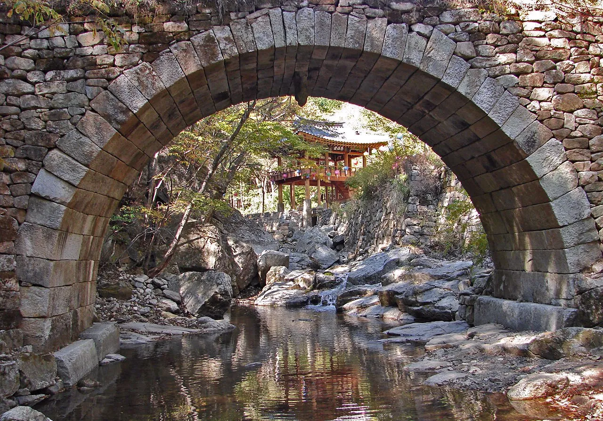
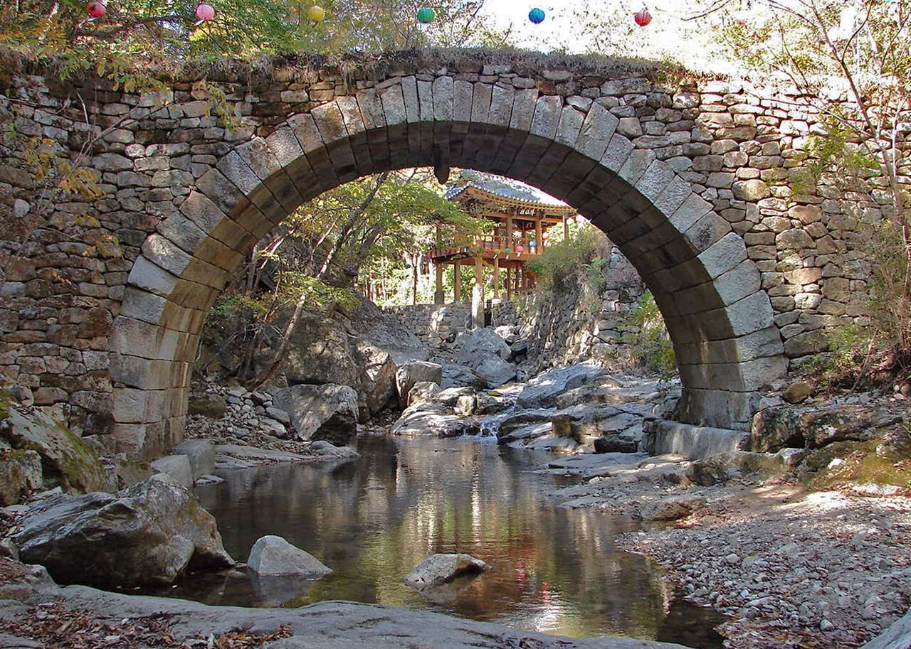
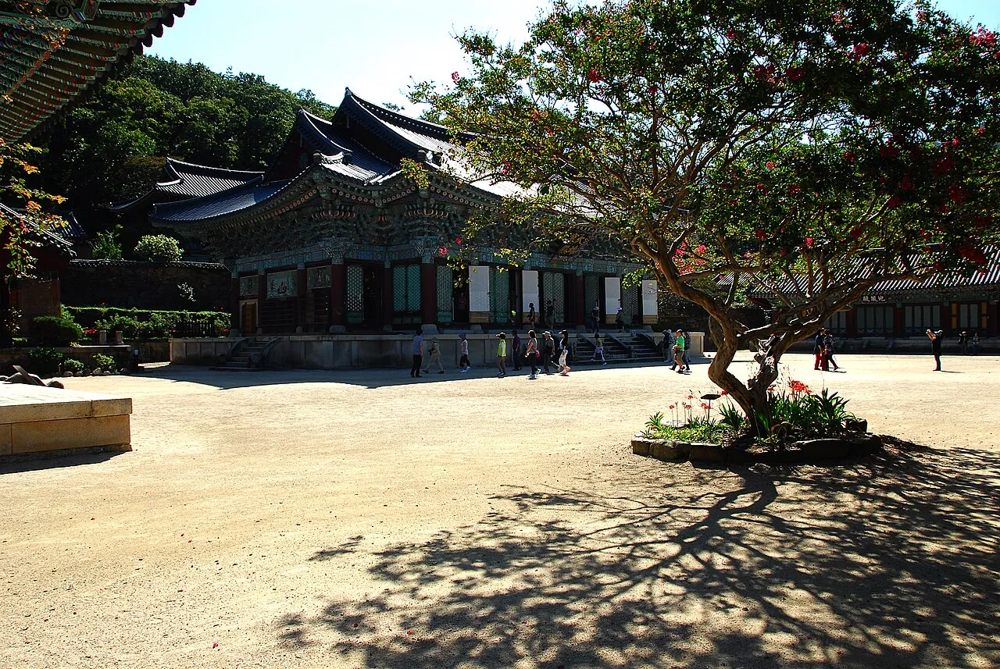
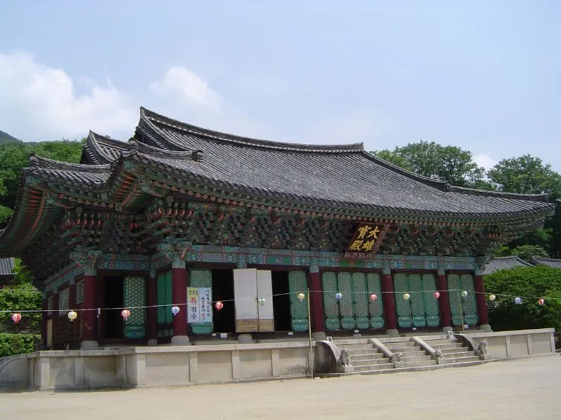
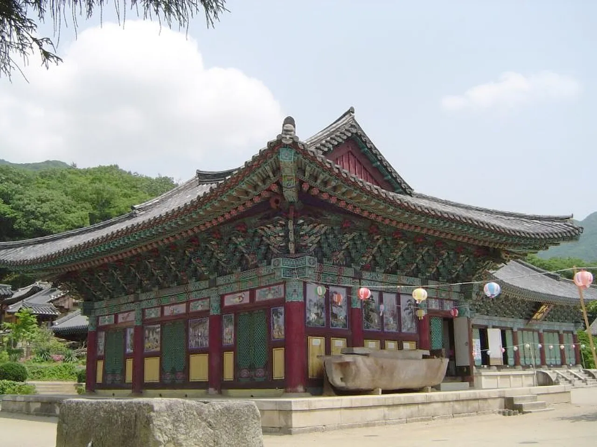
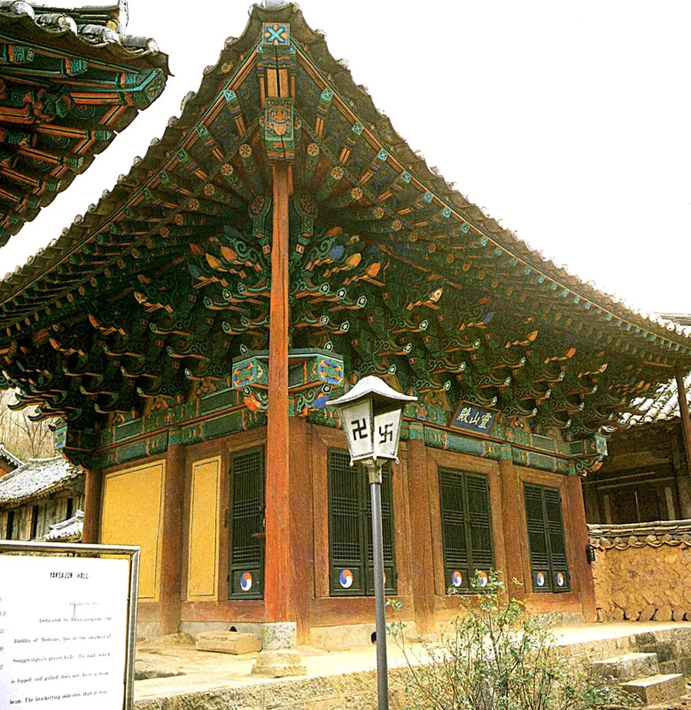
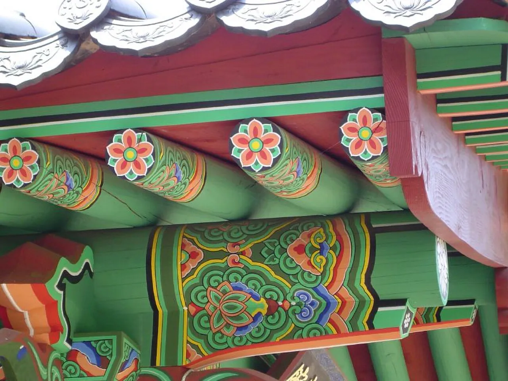

▲ 선암사 입구를 지키는 승선교. 무지개 모양 아치 너머로 강선루가 액자처럼 보인다
전남 순천의 조계산(884m)은 특이한 산이다. 정상을 사이에 두고 동쪽 기슭에는 선암사, 서쪽 기슭에는 송광사가 마주 앉아 있는데, 두 절 모두 창건 역사가 천 년을 훌쩍 넘는다. 선암사는 무지개 모양 돌다리 승선교(국가유산)로 유명하고, 송광사는 고려 시대부터 열여섯 명의 국사(國師)를 배출해 삼보사찰 중 승보사찰(僧寶寺刹)로 불린다. 두 절을 가르는 산줄기에는 굴목재라는 고갯길이 있어, 등산과 사찰 순례를 함께 즐기려는 사람들이 하루 코스로 즐겨 찾는다. 이 기사는 승선교와 송광사 볼거리부터 굴목재 등산로, 단풍 시기, 입장료·주차까지 방문 순서대로 정리했다.
1. 선암사 — 승선교를 지나야 만나는 절

▲ 승선교 옆면. 계곡의 바위와 어우러진 돌다리 구조가 그대로 드러난다 ⓒ Wikimedia Commons
선암사 입구에 놓인 승선교(昇仙橋)는 무지개 모양(홍예)으로 쌓은 돌다리로, 그 자체가 국가유산으로 지정될 만큼 건축적 가치를 인정받는다. 다리 아래에서 위쪽을 올려다보면 아치 한가운데로 강선루(降仙樓) 정자가 액자처럼 걸리는 구도가 유명해, 사진 명소로도 손꼽힌다. 이 다리를 건너야 비로소 선암사 경내로 들어설 수 있는 구조여서, 승선교는 단순한 통로를 넘어 세속과 절을 가르는 상징적 관문 역할을 한다. 선암사는 한국의 전통 산사 중에서도 원형이 잘 보존된 사찰로 꼽히며, 무우전 돌담을 따라 피는 매화(선암매)로도 이름이 높다.
2. 송광사 — 승보사찰과 16국사

▲ 송광사 대웅전. 승보사찰답게 큰 규모의 전각들이 경내에 늘어서 있다 ⓒ Wikimedia Commons
조계산 서쪽 기슭의 송광사는 양산 통도사(불보), 합천 해인사(법보)와 함께 삼보사찰을 이루는 절로, '승려의 보배'라는 뜻의 승보사찰로 불린다. 고려 후기 보조국사 지눌(知訥)을 시작으로 조선시대까지 이 절에서 무려 16명의 국사(國師)가 배출됐기 때문이다. 국사는 나라가 인정한 최고 승직으로, 한 사찰에서 이 정도로 많은 국사를 낸 사례는 송광사가 유일하다. 경내에는 국보 3점과 보물 13점을 포함해 27점의 문화유산이 남아 있으며, 목조 건물만 80여 동에 이를 만큼 규모가 크다.

▲ 송광사 경내 마당. 여러 전각이 이어진 규모가 승보사찰의 위상을 보여준다 ⓒ Wikimedia Commons

▲ 연등이 걸린 송광사 전각. 다포식 공포와 화려한 단청이 특징이다 ⓒ Wikimedia Commons

▲ 송광사 영산전. 석가모니불을 모신 전각으로 독특한 지붕 구조가 눈에 띈다 ⓒ Wikimedia Commons

▲ 송광사 전각 처마의 단청 디테일. 연꽃 문양 서까래가 촘촘히 이어진다 ⓒ Wikimedia Commons
3. 굴목재 등산로 — 두 절을 잇는 산길
선암사와 송광사는 각각 다른 입구로 들어가는 별개의 사찰이지만, 둘 사이를 잇는 굴목재 고갯길을 통해 하루에 순례하듯 걸을 수 있다. 조계산에는 큰굴목재·작은굴목재·송광굴목재까지 모두 세 개의 굴목재가 있는데, 흔히 소개되는 코스는 선암사 주차장에서 출발해 편백숲과 큰굴목재, 중간의 보리밥집을 지나 송광사로 내려서는 길이다. 거리는 코스에 따라 12~13km, 소요시간은 점심시간을 포함해 5~6시간 정도로 안내된다. 조금 더 짧게 잡으려면 장군봉을 거치지 않고 작은굴목재로 바로 넘어가는 코스도 있다.
| 코스 | 경로 | 거리·소요시간 |
|---|---|---|
| 천년불심길(대표 코스) | 선암사 주차장→편백숲→큰굴목재→보리밥집→천자암갈림길→송광사 | 약 12km, 약 5시간(점심 포함) |
| 장군봉 경유 코스 | 선암사→장군봉→배바위→큰굴목재→보리밥집→송광굴목재→송광사 | 약 13km, 약 6시간 |
| 단축 코스 | 선암사→장군봉→작은굴목재→보리밥집→천자암→송광사 | 약 5시간 |
양방향 모두 산행 후 대중교통으로 원래 위치로 돌아오기가 다소 번거로우므로, 자가용을 이용한다면 사전에 차량 회수 방법(콜택시, 순환버스 등)을 계획해두는 편이 좋다. 편백숲 구간은 향긋한 피톤치드를 느끼며 걷기 좋은 완만한 길로 알려져 있다.
4. 단풍 시기와 명승 지정
조계산과 그 자락의 선암사·송광사 일대는 2009년 명승 '조계산 송광사·선암사 일원'로 지정됐다. 사찰과 주변 자연경관이 함께 보호 대상에 포함된 것으로, 지정 면적만 2200만㎡가 넘는다. 가을이면 굴목재 능선과 계곡 단풍이 절정을 이루는데, 정확한 절정 시기는 해마다 달라 산림청·기상청의 그 해 단풍 예보를 확인하는 것이 정확하다. 봄철에는 선암사 무우전 돌담의 매화(선암매)가 별도의 명물로 꼽혀, 계절에 따라 찾는 매력이 다른 산이다.
✅ 단풍철 방문 시 참고할 점
· 조계산 굴목재 코스는 편도 산행만 5시간 이상 소요, 해 지기 전 하산 시간 계산 필수
· 단풍 절정 시기는 매년 산림청·기상청 공식 예보로 확인
· 두 절 모두 각각 다른 방향에 주차장이 있어, 산행 시작·종료 지점을 미리 정해야 함
5. 입장료·주차 정보
선암사와 송광사 역시 2023년 5월 4일부터 시행된 개정 문화재보호법에 따라 문화재관람료가 폐지됐다. 전국 65개 사찰이 동시에 무료 전환된 대상에 두 절 모두 포함돼, 별도의 입장료 없이 경내를 둘러볼 수 있다.
| 항목 | 선암사 | 송광사 |
|---|---|---|
| 문화재관람료 | 무료(2023.5.4 폐지) | 무료(2023.5.4 폐지) |
| 소속 | 대한불교 태고종 | 대한불교 조계종(승보종찰) |
| 위치 | 전남 순천시 승주읍 선암사길 450 | 전남 순천시 송광면 송광사안길 100 |
| 명승 지정 | 조계산 송광사·선암사 일원(2009년 지정) | |
6. 방문 팁 — 두 절 중 하나만 본다면
시간이 넉넉하지 않아 두 절 중 한 곳만 골라야 한다면, 사진 한 장으로 강렬한 인상을 남기고 싶다면 승선교와 강선루가 있는 선암사가, 규모 있는 전각과 불교사적 의미를 느끼고 싶다면 송광사가 낫다는 평이 많다. 반나절씩 나눠 두 절을 모두 도는 것이 부담스럽다면, 대중교통보다는 승용차로 각각 방문한 뒤 굴목재 산행은 별도 일정으로 계획하는 것도 현실적인 방법이다.
✅ 순천 조계산 선암사·송광사, 가기 전 체크리스트
· 선암사 승선교는 국가유산 지정 무지개다리, 강선루와 어우러진 구도로 유명
· 송광사는 삼보사찰 중 승보사찰, 고려~조선 16국사 배출
· 굴목재 코스로 두 절을 이으면 약 12~13km, 5~6시간 소요
· 두 절 모두 2023년 5월부터 문화재관람료 폐지, 입장료 무료
· 2009년 명승 '조계산 송광사·선암사 일원'으로 지정
· 산행 후 차량 회수 방법을 미리 계획해두는 것이 안전